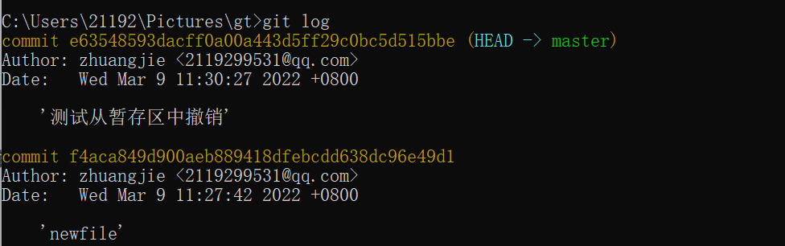

1）准备Git环境1-1）下载Git: https://git-scm.com/downloads1-2）ssh-keygen #在本地生成ssh, 然后将本地ssh的公钥加入在远程仓库容器的ssh配置中，这样电脑就可以操作该账号下的仓库了1-3）git config --global user.email 'XXXX@qq.com' //使用git初次使用的命令1
1-1）下载Git: https://git-scm.com/downloads
1-2）ssh-keygen #在本地生成ssh, 然后将本地ssh的公钥加入在远程仓库容器的ssh配置中，这样电脑就可以操作该账号下的仓库了
1-3）git config --global user.email 'XXXX@qq.com' //使用git初次使用的命令1
2）概念
ssh、分支、远程仓库
ssh：是一种安全可靠的技术，可以用来传输、远程登录等
分支：一个仓库可以有多个分支，这在公司中是非常有用的，如果要分一个小组来开发一个新功能就需要另开一个分支了，开发完后，然后再进行合并

远程仓库：与本地仓库相对应,比如github、gitee等
3）高频使用命令
[1] 基本命令

[2] 常规操作git init #创建一个本地仓库，伴生一个master本地分支git clone -b 分支名 远程仓库地址（https、ssh） #克隆远程仓库到本地git remote add origin 远程仓库链接（一般都用ssh） #添加远程仓库名字为origin(标准用名) git remote remove origin #从本地远程仓库列表中移除名为"origin"的远程仓库地址git branch -r #查看远程仓库git add . #“."代表全部,将全部的文件加入暂时区（可以是一个文件名，但很少这样用）git status #红色代表在工作区，绿色在暂存区git commit -m '备注信息' #将当前分支的暂时区代码提交当前分支的仓库中git log #查看当前分支下的仓库的commit记录git push origin <本地分支名>:<远程分支名> #将本地指定的分支与远程的仓库“origin"的指定分支名进行合并#（如果在这个时候你的同事提交了代码，此时你仓库的代码不是最新的了，这个时候你需要拉取-处理冲突-提交）git pull origin master #拉取origin远程仓库的代码与你本地的代码进行合并， 拉取代码-处理冲突-再提交
git init #创建一个本地仓库，伴生一个master本地分支
git clone -b 分支名 远程仓库地址（https、ssh） #克隆远程仓库到本地
git remote add origin 远程仓库链接（一般都用ssh） #添加远程仓库名字为origin(标准用名)
git remote remove origin #从本地远程仓库列表中移除名为"origin"的远程仓库地址
git branch -r #查看远程仓库
git add . #“."代表全部,将全部的文件加入暂时区（可以是一个文件名，但很少这样用）
git status #红色代表在工作区，绿色在暂存区
git commit -m '备注信息' #将当前分支的暂时区代码提交当前分支的仓库中
git log #查看当前分支下的仓库的commit记录
git push origin <本地分支名>:<远程分支名> #将本地指定的分支与远程的仓库“origin"的指定分支名进行合并
#（如果在这个时候你的同事提交了代码，此时你仓库的代码不是最新的了，这个时候你需要拉取-处理冲突-提交）
git pull origin master #拉取origin远程仓库的代码与你本地的代码进行合并， 拉取代码-处理冲突-再提交
[3] 本地分支操作git branch #查看本地仓库的分支列表git checkout -b login #在本地仓库创建一个名为"login"的分支git checkout master #切换到master分支上git branch -D zjazn #删除名为zjazn的分支
git branch #查看本地仓库的分支列表
git checkout -b login #在本地仓库创建一个名为"login"的分支
git checkout master #切换到master分支上
git branch -D zjazn #删除名为zjazn的分支
[4] 远程分支操作git push origin <本地分支名>:<远程分支名> #在本地仓库开辟一个分支后，当提交时的远程仓库分支不存在时，会自动创建git push origin :<远程分支名> #与一个空的仓库推送到远程分支中，就是删除git merge <要合并的本地分支名> #在本地合并后（被合并的分支不会删除），推送到远程仓库中，再删除远程仓库已被合并的分支
git push origin <本地分支名>:<远程分支名> #在本地仓库开辟一个分支后，当提交时的远程仓库分支不存在时，会自动创建
git push origin :<远程分支名> #与一个空的仓库推送到远程分支中，就是删除
git merge <要合并的本地分支名> #在本地合并后（被合并的分支不会删除），推送到远程仓库中，再删除远程仓库已被合并的分支
[5] 撤销操作—从工作区中撤销：就是还不在git的管理下的修改git checkout — <file> #如何是全部<file>就是"."—从暂存区中撤销（git add后加入暂存区），注意撤销后，工作区中还有的！！就是从暂存区中删除了，这样就可以使用git checkout — <file> 从工作区中撤销了，add的内容，使用“git checkout ”命令是不可能撤销的！git reset HEAD—从本地仓库中撤销（git commit 后放入本地仓库）从哪次的git commit中撤销，这我们得知道，所以要用git log #查看 git reset f4aca849d900aeb889418dfebcdd638dc96e49d1 #返回到这一次去，请用git log查看（注意是撤销到这一次，而不是把这一次的撤销）—从远程仓库中撤销先从本地撤销，再push即可！
—从工作区中撤销：就是还不在git的管理下的修改
git checkout — <file> #如何是全部<file>就是"."
—从暂存区中撤销（git add后加入暂存区），注意撤销后，工作区中还有的！！就是从暂存区中删除了，这样就可以使用git checkout — <file> 从工作区中撤销了，add的内容，使用“git checkout ”命令是不可能撤销的！
git reset HEAD
—从本地仓库中撤销（git commit 后放入本地仓库）
从哪次的git commit中撤销，这我们得知道，所以要用
git log #查看
git reset f4aca849d900aeb889418dfebcdd638dc96e49d1 #返回到这一次去，请用git log查看（注意是撤销到这一次，而不是把这一次的撤销）
—从远程仓库中撤销
先从本地撤销，再push即可！
[6] 打标签--打taggit tag -a v版本号 -m 'tag信息' #创建本地的tagget tag #查看tag git push origin v版本号 #提交指定tag到远程仓库--删除taggit tag -d v版本号 #删除本地仓库标签git push origin :refs/tags/v版本号 #删除远程仓库标签
--打tag
git tag -a v版本号 -m 'tag信息' #创建本地的tag
get tag #查看tag
git push origin v版本号 #提交指定tag到远程仓库
--删除tag
git tag -d v版本号 #删除本地仓库标签
git push origin :refs/tags/v版本号 #删除远程仓库标签